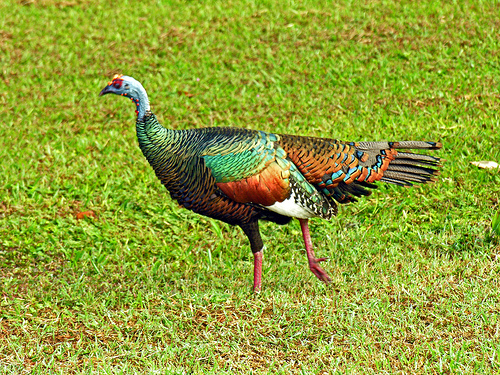

Descripción
El pavo ocelado, guajolote ocelado, pavo de monte o kuts (Meleagris ocellata) es una especie de ave galliforme de la familia Phasianidae. Es un ave grande, de entre 70-90 cm y 3 kg
(hembra) a 4 kg (macho) de peso, endémica de la Península de Yucatán.
La cabeza de ambos sexos es azul y poseen como especie de verrugas que son de color naranja o rojo mucho más visibles en los machos y estos además tienen una carnosidad de color azul
que parece una corona, esta corona cuando se llega la época de celo se le acentúan los colores y se ensancha y se pone mucho más brillante. Los ojos tienen alrededor una especie de
anillo que es de piel y de color rojo. Ninguno de los dos sexos ni hembra ni macho tiene barba lo contrario sucede con el pavo norteño que si posee. Se conocen unas sub especies del
pavo de monte y estas son Penélope obscura bronzina, Penélope obscura obscura, Penélope obscura bridgesi.

Hábitat
El pavo de monte se encuentra muy bien distribuido en península de Yucatán y en los estados que forman parte de México como son Quintana Roo, Campeche y Yucatán. Generalmente habita
en bosques tropicales o subtropicales, zonas boscosas, selvas bajas donde se sientan tranquilos para vivir y consigan suficiente alimento. Por ser habitantes del monte tiene la
facilidad de conseguir que ingerir. Son aves que en cautiverio pueden adaptarse y ser criadas con tranquilidad.
Situación actual
Chordata: Son un filo del reino animal caracterizado por la presencia de una cuerda dorsal o notocorda. Galliformes: Es un clado de aves neognatas con categoría taxonómica de orden que cuenta con 283 especies. Accipitrinae: Son una subfamilia de aves Falconiformes de la familia Accipitridae que incluye aves rapaces de tamaño mediano o pequeño. Meleagris: Es un clado de aves galliformes de la familia Phasianidae que incluye dos especies que habitan en América. Phasianidae: Son una familia de aves del orden Galliformes, entre las que se cuentan los gallos, faisanes, los pavos, las perdices y otras aves terrestres.
 Aves en peligro de extinción
Aves en peligro de extinción